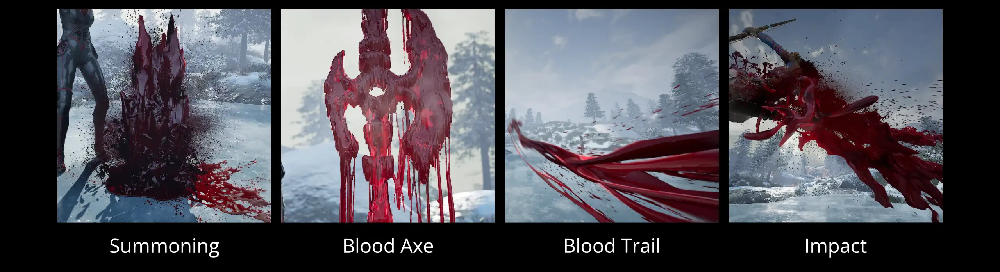

2025/12
Unreal Engine, Houdini, Liquigen, Substance Designer
◆ I did not use generative AI.
What I did I made the vfx and camerawork:
- Blood, Magic, and Steam Effects
- Blood Shader
- Camerawork
Assets used The axe model, environment, characters, and character animations are assets created by other artists:
- Dark gothic halberd (modified) by Naked Singularity Studio on Fab: https://fab.com/s/46780028b896
- Paragon: Countess and Paragon: Sparrow by Epic Games on Fab: https://fab.com/s/56f12b4cccf9 https://fab.com/s/d502c195d1f4
- Procedural Nature Seasons Pack by PurePolygons on Fab: https://fab.com/s/ff87ae1c6a48
- 263 Rokoko motion capture assets by Rokoko on their website: https://www.rokoko.com/mocap/free-mocap-assets
- Mixamo animations: https://www.mixamo.com

Blood Magic Attack
Blood Magic Attack is a cinematic-ready real-time VFX. I took this project as a chance to practice different ways to represent liquid effects inside a game engine: sprites, 2D flipbooks, mesh flipbooks, and VATs. Then, I used the methods I found most fitting to complete the effects. There are four main parts to this effect:

Summoning
For this effect, I wanted a big splash that revealed a blood weapon behind it. This is the process I
followed:
１．I made procedural animated meshes in Houdini to use as emitters
２．I made liquid simulations in Liquigen
３．I exported them in various forms: sprites, flipbooks, and meshes
４．I did post-processing of the resulting textures and meshes in Substance Designer or Houdini
５．I put them together in Unreal
I mixed 2D and 3D assets to achieve a convincing three-dimensional appearance while keeping performance in
mind. Below, you can see all the assets I used for the Summoning part of the effect:

As you can see, there's only two 4K textures used for this effect. One of the critical points in saving performance was joining the two main flipbooks into one, adding variety while keeping the effect optimized.

To add more body to the effect, I mixed in a mesh. It is a regular mesh, not a VAT or mesh flipbook. I animated the vertices using a power of their local position to achieve some motion. Using Houdini, I wrote a thickness value into the vertex colors to use for subsurface shading.
Blood Axe
The Blood Axe shader uses vertex displacement and a normals panning texture with UV distortion. As for the vertex displacement, I mask the down-facing vertices and apply a downward displacement using a voronoi noise. For the subsurface, I repurposed the metallic texture made by the original artist of the axe asset.

As for the dripping, I used a single flipbook texture (two including the normals). Similarly to the Summoning splash, I joined four different flipbooks into one to add variety while keeping performance. Here, I simulated and rendered them all together.
Blood Trail
In the Blood Trail, I use three textures for the main trail:
１．Alpha, Thickness and Erosion
２．Normals
３．Second set of Normals that are blended in as the alpha erosion happens.
They are tileable textures containing two trails, similar to the trick I used before to maximize texture
space and variety.

Impact
I used the same techniques to make the Impact effect. I also reused most of the textures. Only this one introduces a mesh flipbook. I wanted to add more three-dimensionality to the effect, and I chose it over a VAT to avoid introducing more large textures.
The mesh flipbook has velocities written into the vertex color, which I used to interpolate positions and achieve a slow-motion effect. For the 2D flipbook, I used a motion vectors texture.